Project Goal
The goal of a thesis in Bachelor of Science of Product Design was to create a hardware product with some intellectual property.
Initial Research
Most of initial research was spent on finding a subject for thesis. Subjects were drawn from list of topics, and the most impactful one was chosen after extensive brainstorming.
I have chosen eye strain because that was the probem that I was most familiar with.
Then, research was planned in steps. The goal was to impose a time limit on each step of research.
Fun fact : a large part of research involved patent search, and this is an essential step in hardware development, before any design will be done.
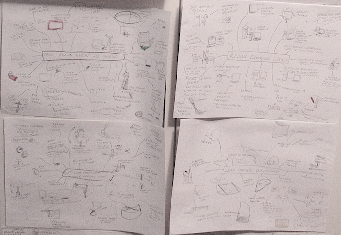
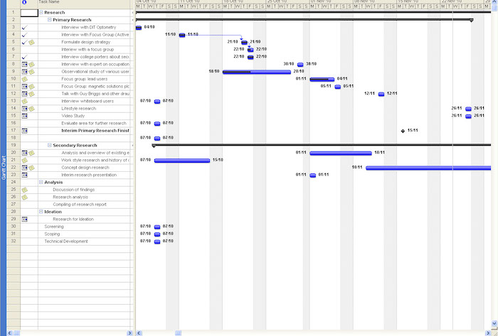
Domain Research
Once the concept was narrowed down, the following steps were executed to get a better understanding of the problems behind eye strain:
Interview with experts at National Optometry Centre
Conduct surveys with active computer users, such as gamers and other students
Evaluate pros and cons of present solutions
Evaluate future solutions which will disrupt existing eye strain reduction technologies such as brain-computer interface
A matrix of potential solutions was drawn up and all solutions were thoroughly evaluated.
Conclusion was to create a system which observes the user with a camera and guides him/her towards a less eye straining posture with a software app.
Design Resolution of Camera
Concept resolution was done by using mouldable clay to sketch out suitable pieces rapidly and test them. The aim was to create a webcam which could house essential equipment and attach onto any computer or a laptop.
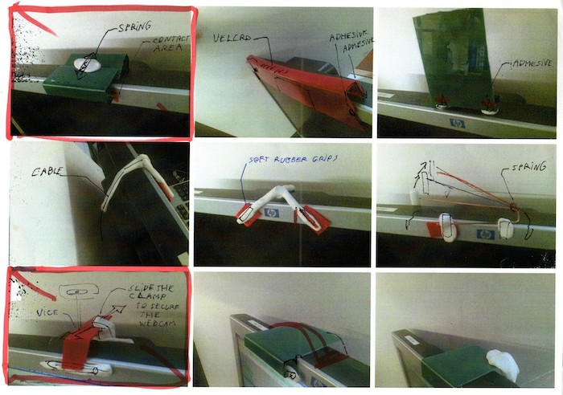
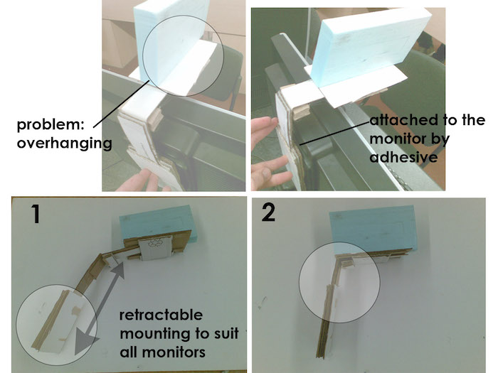
Design Aesthetics
Once the basic concept was resolved, the aesthetics of both hardware and software design were considered. The theme was around utility, enforcement and warning.
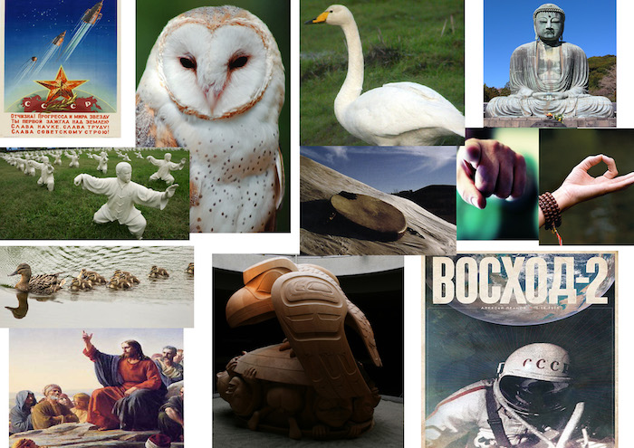
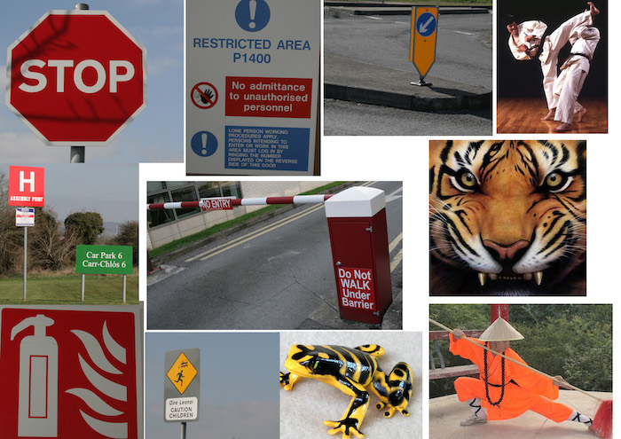
Design Details - Camera
For the camera, the concept was created and evaluated in SolidWorks. The aim was to create a camera which could be placed on any monitor and withstand the stresses and strains of continuous usage.
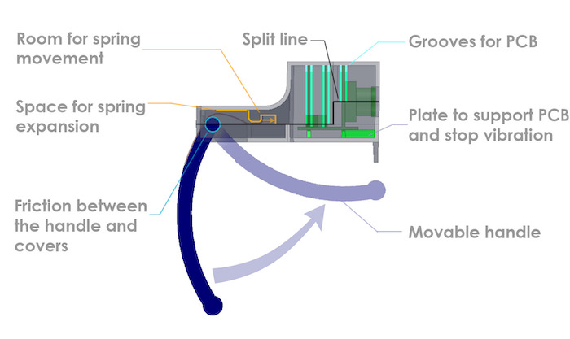
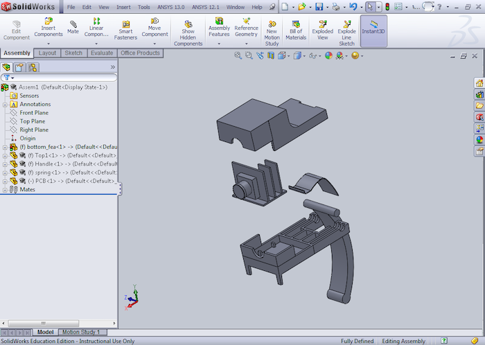
Design Details - Software
For the software application, the aim was to create a pop-up which appeared when user was in an eye straining position. The pop-up would instruct the user to move into a less eye straining position.
Interface contained pop-ups, which required very little interaction.
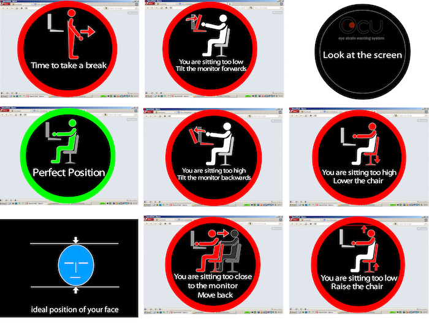
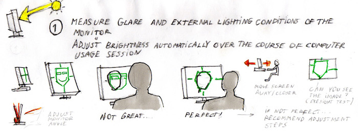
Execution
The camera was built by embedding a cheap webcam into a 3D printed case.
Interface was built in LabView, where camera interactions were programmed. LabView contained a machine vision tool which helped to detect colours. I have created a programme where LabView detected a selection of skin tones. If the user was wearing something which was exactly the same colour as his/her face, the programme would not be accurate.
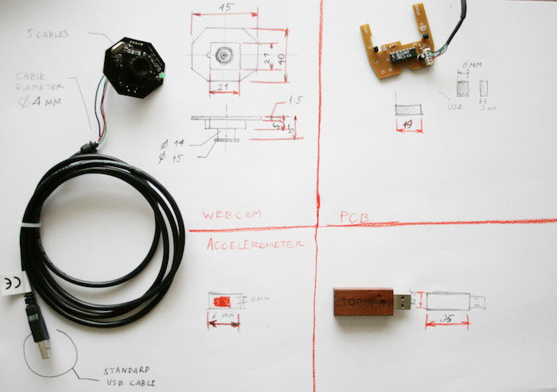


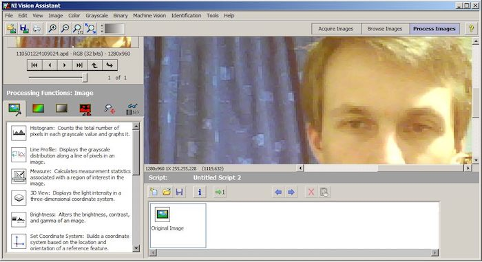
Project Outcome
After being nominated as a runner-up in an Irish digital media competition , I have made an attempt to pitch it to a start-up accelerator. The pitch was not successful. However, one part of the project became standard features on many laptops : screen which changes brightness depending on external lighting